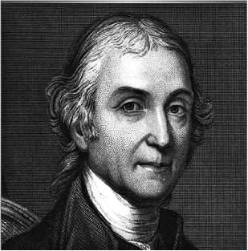
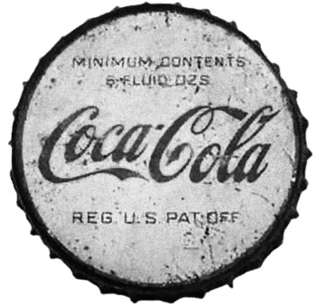
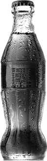

История в бокалах . От Соды до Колы..


Силой! Смелостью! Умом удивляет школу!
Если часто пьет в обед мальчик кока-колу!
Индустриальная сила
Индустриализм и консьюмеризм сначала укоренились в Великобритании, но именно в Соединенных Штатах они по-настоящему расцвели благодаря новому подходу к организации промышленного производства. В доиндустриальном обществе продукт от начала и до конца был делом рук ремесленника. Британская промышленная революция разделила производственный процесс на отдельные операции, часть из которых выполняли быстрые и эффективные машины. Американцы пошли дальше, отделив производство деталей от сборки готового изделия. Этот подход, известный как американская система производства, заложил фундамент индустриальной мощи Америки. Первыми его опробовали оружейники, затем производители швейных машин, велосипедов и автомобилей. Вскоре массовое производство и маркетинг потребительских товаров стали неотъемлемой частью американского образа жизни.
Америка XIX века была идеальной средой для этого нового массового потребительства. Благодаря новым станкам и механизмам даже неквалифицированные работники могли производить высококачественный продукт. Отсутствие региональных и классовых предпочтений, присущих европейским странам, позволяло массово выпускать и продавать его повсюду, не адаптируя к местным вкусам. После окончания Гражданской войны в 1865 году национальные железнодорожные и телеграфные сети превратили страну в единый рынок. Вскоре даже англичане стали импортировать американскую технику – верный признак утраты промышленного лидерства. К 1900 году американская экономика обогнала британскую и стала крупнейшей в мире. В XIX веке Америка наращивала свою экономическую мощь в интересах внутреннего потребителя, а в XX веке использовала ее в геополитических целях, сначала решительно вмешавшись в две мировые войны, а затем приняв участие и в третьей, холодной войне с Советским Союзом. Соревнование двух экономических систем, капиталистической и социалистической, закончилось поражением СССР. К концу века, который по праву называют веком Америки, Соединенные Штаты остались единственной сверхдержавой, доминирующей военной и экономической силой в мире, где государства теснее, чем когда-либо прежде, были объединены политическими, торговыми и культурными связями.
Развитие Америки и глобализация сыграли решающую роль в продвижении самого известного в мире бренда. Для сторонников Соединенных Штатов Coca-Cola символизирует экономическую и политическую свободу выбора, потребительскую модель и демократию, американскую мечту; для противников – беспощадный капитализм, гегемонию глобальных корпораций и американизацию, уничтожающую национальные культурные ценности. Подобно истории Британской империи, отразившейся в чашечке чая, путь Америки к мировому господству – это история о кока-коле, коричневом сладком газированном напитке.
Пузыри и успех содовой
Прямой предок Coca-Cola и всех других искусственно газированных безалкогольных напитков был произведен, как ни странно, на пивоварне в Лидсе около 1767 года Джозефом Пристли, английским священнослужителем и ученым. Он жил по соседству с пивоварней и заинтересовался пузырившимся в бродильных чанах газом, известным в то время как «неподвижный воздух». Используя пивоварню в качестве лаборатории, Пристли приступил к исследованию свойств этого загадочного газа. Проводя свечой над поверхностью ферментирующего пива, он заметил, что газ гасит пламя. Дым от свечи, поглощенный газом, стекал по стенкам сосуда, и это означало, что газ был тяжелее воздуха. Быстро переливая воду из одного стакана в другой над поверхностью чана, Пристли получил «чрезвычайно приятную газированную воду». Сего дня мы знаем этот газ как углекислый, а воду – как содовую.
Одной из теорий о свойствах «неподвижного воздуха» в то время была гипотеза, что углекислый газ – антисептик, а значит, и газированный напиток может обладать лечебными свойствами. Подтверждением этой теории был оздоравливаюгций эффект, который оказывали природные минеральные воды, зачастую шипучие. В 1772 году Пристли представил свои выводы Королевскому обществу в Лондоне и опубликовал книгу «Насыщенная вода с неподвижным воздухом». К этому времени он разработал более эффективный способ изготовления газированной воды. Газ, полученный в сосуде путем химической реакции, под давлением поступал в бутылку с водой и растворялся в ней после встряхивания. За открытие медицинского потенциала газа Пристли получил медаль Копли, высшую награду Королевского общества. (Предполагалось, что газированная вода может излечивать цингу в морских путешествиях. Это было до того, как нашли по-настоящему эффективное средство – лимонный сок.)
Сам Пристли не пытался коммерциализировать свое открытие. Предположительно, первым предложил продавать искусственно газированную воду в качестве лекарства в 70-х годах XVIII века химик и аптекарь из Манчестера Томас Генри. Он внимательно следил за усилиями создателей искусственных минеральных вод и был уверен в их пользе для здоровья, особенно при «гнилостных лихорадках, дизентерии, желчных рвотах и т. д.». Используя аппарат собственного изобретения, Генри смог производить до 12 галлонов игристой воды за один цикл. В брошюре, опубликованной в 1781 году, он объяснил, что ее нужно «хранить в бутылках, очень плотно закупоренных и запечатанных». Он также рекомендовал принимать ее вместе с лимонадом – смесью сахара, воды и лимонного сока. Возможно, именно Генри первым продал сладкий, искусственно газированный напиток.

Джозеф Пристли в 1772 году опубликовал книгу, в которой объяснял, как делать содовую воду
В 1790-х годах ученые и предприниматели по всей Европе с разной степенью успеха занимались производством искусственных минеральных вод для продажи. Шведский химик Торберн Бергман посоветовал одному из своих учеников открыть небольшую фабрику, но производство было неэффективным – женщина, занятая розливом, запечатывала
всего три бутылки в час. Успеха добилось предприятие, созданное в Женеве механиком Николасом Полом совместно с финансистом Якобом Швеппом. Метод карбонизации воды, предложенный Николасом Полом, в 1797 году врачи Женевы признали лучшим, и фирма вскоре начала продавать свою бутилированную воду как внутри страны, так и на экспорт. К 1800 году Пол и Швепп разделили компанию и создали конкурирующие фирмы в Британии. Более мягкую газированную воду, лучше соответствующую британскому вкусу, производила компания Schweppe’s. Считалось, что напиток с меньшим количеством пузырьков лучше имитирует природную минеральную воду. На картинке этого периода, высмеивающей напиток конкурентов, пузырьки изображены в виде воздушных шаров.
Некоторые искусственные минеральные воды были приготовлены с использованием бикарбоната натрия, поэтому содовая вода стала общепринятым названием таких напитков. До 1800 года их выписывали строго по показаниям врачи, обладающие патентом на медицинские услуги. Налог на каждую проданную бутылку составлял три пенни. Лондонская реклама 1802 года утверждала, что «щелочная вода с газом, обычно называемая газированной водой, эффективно используется в этой стране в лечебных целях».
Однако наибольшую популярность этот напиток снискал в Америке. Как и в Европе, свойства природных минеральных вод и возможность их имитации вызывали интерес ученых. Философ, физиолог и психиатр из Филадельфии Бенджамин Раш исследовал минеральные воды Пенсильвании ив 1773 году сообщил о своих выводах Американскому философскому обществу. Два знаменитых государственных деятеля, Джеймс Мэдисон и Томас Джефферсон, также проявили интерес к лекарственным свойствам минеральных вод. Источники в Саратога-Спрингс (штат Нью-Йорк) были особенно популярны в то время. Джордж Вашингтон посетил их в 1783 году и в письме к другу описал попытки бутилировать такую воду. «Что отличает эту воду… от всех других… это большое количество фиксированного воздуха, который она содержит… Вода… не может быть ограничена рамками сосуда, чтобы воздух так или иначе не убежал оттуда. Несколько человек рассказали нам, что они пытались закупорить его в бутылки, но они разбились… В единственной бутылке, которая не разбилась, воздух пробился сквозь деревянную пробку и воск, которым она была запечатана».
В США превращению содовой воды из медицинского препарата в коммерческий продукт способствовал Бенджамин Силлиман, профессор химии Йельского университета. В 1805 году он отправился в Европу на поиски книг и аппаратов для своего нового научного отдела и был поражен популярностью бутилированной газированной воды, продаваемой в Лондоне Швеппом и Полом. Вернувшись, он занялся изготовлением содовой воды для своих друзей. «Совершенно невозможно с моим нынешним оборудованием обеспечить всех, кто высказывает пожелание приобрести газированную воду, и я решил начать производство в больших масштабах, как это делается в Лондоне», – писал он деловому партнеру. В 1807 году Силлиман начал продавать бутилированную газированную воду в Нью-Хейвене, штат Коннектикут.
Вскоре у него появились последователи, в частности Джозеф Хокинс из Филадельфии, который изобрел питьевой фонтан для раздачи газированной воды. Хокинс пытался подражать насосным комнатам, построенным над природными источниками в Европе, где минеральную воду разливали непосредственно в стаканы. Согласно описанию его спа-комнаты 1808 года, «минеральная вода… выходит из источника или резервуара, в котором ее готовят под землей, через перпендикулярные деревянные колонны в металлические трубы, и затем в кран наверху, то есть напрямую, без необходимости розлива». Хокинс получил патент на это изобретение в 1809 году. Но идея продажи газированной воды в условиях спа-курорта не прижилась, ее подхватили и успешно реализовали аптекари. К концу 1820-х годов они готовили и продавали содовую воду из питьевых фонтанов, хотя бутилированную воду продолжали импортировать из Европы, а минеральную воду из Саратога-Спрингс продавали в бутылках с 1826 года.
Как и многие другие напитки ранее, газированная вода, начав свой путь к потребителю как лекарственное средство, в итоге стала широко использоваться в качестве освежающего напитка, некоторую респектабельность которому придавало его «медицинское прошлое». Еще в 1809 году одна американская книга по химии отмечала, что «газированная вода очень освежает, особенно на жаре, и для большинства людей… эффективна также как средство от усталости». Кроме того, газированную воду можно было использовать для изготовления игристого лимонада, почти наверняка первого современного газированного напитка. К началу XIX века ее также начали смешивать с вином по обе стороны Атлантики. Один английский наблюдатель отмечал, что «при смешивании с вином обнаруживается, что нужно гораздо меньше вина для удовлетворения желудка и нёба». Сегодня мы называем этот коктейль «Венецианский спритц». Но с 1830-х годов, особенно в Соединенных Штатах, содовую воду ароматизировали специально приготовленными сиропами.
В 1830 году американский медицинский журнал отмечал, что такие сиропы «применяются для ароматизации напитков и широко используются в качестве благодарных добавок к углекислоте». Изначально сиропы готовили вручную из клубники, малины, ананасов или сарсапариллы. На питьевых фонтанах устанавливали специальные дозаторы. Кубики льда добавляли для охлаждения как газированной воды, так и сиропов. К 1870-м годам производство содовых фонтанов, которые к этому времени заметно увеличились в размерах, было поставлено на поток. В 1876 году на Всемирной выставке в Филадельфии Джеймс Тафте, промышленник из Бостона, продемонстрировал свой арктический содовый фонтан. Это сооружение высотой 30 футов, украшенное мрамором, серебряной фурнитурой и горшечными растениями, разместили в специально спроектированном для него здании. Фонтан обслуживали официанты в безукоризненной униформе. Благодаря изобретательной и яркой презентации компания Тафтса Soda Fountain получила множество заказов.
Промышленное производство содовой воды развивалось и благодаря таким бизнесменам, как Джон Мэтьюз, перебравшийся в Нью-Йорк ветеран британской торговли содовой водой. Первоначально он сосредоточился на изготовлении и продаже собственной газированной воды, а затем на продаже содовых фонтанов, но его сын (тоже Джон), присоединившийся к проекту, стал развивать новое направление. Мэтьюз-младший разработал специализированную технику для автоматизации всех этапов производства содовой воды, от карбонизации до мытья бутылок, и начал продавать эту технологию другим фирмам. К 1877 году компания собрала более сотни патентов и продала более 20 тысяч машин. Его каталог предлагал «полный комплекс оборудования для производства и розлива газированной воды, имбирного эля и т. д., включая пробки» по цене 1146,45 доллара США. Это предложение включало само устройство и сырье для производства газа, два фонтана для карбонизации воды, разливочную машину, пятьдесят ящиков бутылок, ароматизаторы и красители. Изобретения Мэтьюза получили множество наград на международных выставках.
Газированная вода, производимая в промышленных масштабах, казалось, олицетворяла саму суть Америки. В статье, опубликованной в 1891 году в еженедельнике Харпера, Мэри Гей Хамфрис заметила, что «важнейшее достоинство содовой воды и всего того, что ей сопутствует и делает ее национальным напитком, – это ее демократизм. Миллионер может пить шампанское, а бедный человек – пиво, но они оба пьют содовую воду». Ее предположение о том, что газированная вода стала национальным напитком Америки, однако, только часть правды. В то время появился поистине национальный напиток, только наполовину состоящий из газированной воды.
Миф о создании кока-колы
В мае 1886 года Джон Пембертон, фармацевт из Атланты, штат Джорджия, пытаясь создать лекарство от головной боли, смешал несколько жидких ингредиентов с газированной водой и доставил свое изобретение в ближайшую аптеку. Так был создан сладкий, шипучий и бодрящий напиток Coca-Cola, который в конечном счете завоевал весь мир. Такова легенда, однако реальная история сложнее.
Согласно официальной версии компании Coca-Cola, фармацевт Пембертон случайно соединил удачные ингредиенты, а на самом деле он был одним из многочисленных шарлатанов-производителей патентованных лекарств, очень популярных в Америке в конце XIX века. Эти таблетки, бальзамы, сиропы, кремы и масла, иногда безвредные, иногда содержавшие большое количество алкоголя, кофеина, опиума или морфина, продавались через рекламные объявления в газетах. Их производство превратилось в гигантскую отрасль после Гражданской войны, так как именно ветераны были основными потребителями этой продукции. Причиной ее популярности было общее недоверие к обычным лекарствам, дорогим и зачастую неэффективным. Патентованные лекарства предлагали заманчивую альтернативу. Утверждалось, что их производят на основе экзотических ингредиентов или по рецептам коренных американцев: «Таблетки Paw-Paw от Munson для очистки вашей печени», «Индейские корни от доктора Морса» и т. д.
«Эликсир жизни от доктора Кидда», например, рекламировался как средство от «всех известных болезней… Хромые выбрасывают костыли и ходят после двух или трех приемов нашего средства. Ревматизм, невралгия, болезни желудка, сердца, печени, почек, крови и кожи исчезают как по волшебству». У газет, печатавших эти рекламные объявления, не возникало вопросов к изготовителям таких «лекарств». Доходы от рекламы позволяли газетной индустрии быстро расширяться: патентованные лекарства в конце XIX века занимали больше рекламного места в газетах, чем любой другой продукт. Создатели «масла святого Джейкоба», которое, как говорили, снимало «боль в мышцах», заплатили за рекламу в 1881 году 5 тысяч долларов, а к 1895 году уже тратили более миллиона долларов в год.
Бизнес патентной медицины одним из первых оценил важность товарных знаков, логотипов, слоганов и рекламных щитов. Поскольку производство «лекарств» обходилось дешево, можно было не экономить на маркетинге. Хотя из-за присутствия на рынке множества конкурирующих продуктов только 2 процента из них были прибыльными. Но те, что преуспели, сделали своих изобретателей сказочно богатыми. Одной из самых раскрученных была растительная добавка Лидии Пинкхэм. Считалось, что это «лекарство от всех болезненных жалоб и слабостей, столь распространенных среди нашего лучшего женского населения… Она устраняет слабость, метеоризм и тягу к стимуляторам». Клиентам предлагали писать в медицинскую лабораторию Пинкхэм даже после ее смерти в 1883 году. В ответ им присылали рекламные буклеты с рекомендацией увеличить дозу препарата. Исследования, проведенные в начале XX века, доказали, что эта добавка на 15–20 процентов состоит из спирта. По иронии судьбы, среди самых преданных клиентов были женщины-активистки противоалкогольного движения.
Патентованные лекарства Пембертона время от времени приносили солидный доход, но в 1870-х годах у него началась черная полоса. В 1872 году его объявили банкротом, затем два пожара уничтожили все запасы медикаментов. Но он продолжал работу, и наконец в 1884 году его попытки встать на ноги увенчались успехом благодаря популярности коки, нового ингредиента патентной медицины.
Стимулирующий эффект листьев коки был издревле известен населению Южной Америки. Коку называли «божественным растением инков». При жевании листья выделяли алкалоидный препарат кокаин, в небольших дозах действовавший подобно кофеину. Он тонизировал, обострял внимание и подавлял аппетит, помогая совершать длительные переходы в Андах. Кокаин, выделенный из листьев коки в 1855 году, стал предметом научного интереса западных ученых и врачей, которые видели в нем альтернативу опиуму в борьбе с опиумной наркоманией. (Они не знали, что кокаин тоже вызывает привыкание.) Пембертон внимательно следил за дискуссией в медицинских журналах, а к 1880-м годам он и другие производители патентованных медицинских средств включили коку в состав своих таблеток, эликсиров и мазей.
Вклад Пембертона в эту развивающуюся отрасль – напиток French Wine Соса. Вино с кокой, как следует из названия. Фактически это была лишь одна из многочисленных версий популярного патентованного лекарства «Вино Мариани», сделанного из французского вина, в котором листья коки настаивались полгода. «Вино Мариани» пользовалось огромным спросом в Европе и Соединенных Штатах благодаря высокому содержанию кокаина и маркетинговому мастерству его создателя, корсиканца Анджело Мариани. Письма с одобрительными отзывами об этом напитке от местных жителей и глав государств, в том числе трех пап, двух американских президентов, королевы Виктории и изобретателя Томаса Эдисона, были опубликованы в 13-томном издании.
В вино, обогащенное кокой, Пембертон добавил экстракт колы. Орехи кола из Западной Африки – еще одно «чудо-лекарство», покорившее Запад примерно в то же время, что и кока, благодаря все тому же тонизирующему эффекту (они содержат около 2 процентов кофеина). Как и в случае с листьями коки в Южной Америке, их употребляли в качестве стимуляторов коренные народы Западной Африки, от Сенегала на севере до Анголы на юге. Например, йоруба в Нигерии использовали их в религиозных церемониях, а жители Сьерра-Леоне ошибочно полагали, что орехи кола лечат малярию. В XIX веке кока и кола часто входили в состав американских патентованных медикаментов из-за сходства их эффектов.
Пембертон позаимствовал не только формулу Мариани для своего напитка, лишь слегка ее изменив, но и его рекламную концепцию, утверждая, что знаменитостям нравятся его напитки. Продажи его французского вина с кокой начали расти. Но когда казалось, что Пембертон на правильном пути, Атланта и графство Фултон проголосовали за запрет продажи алкоголя с 1 июля 1886 года на два года. Движение за сухой закон набирало силу по всей стране, и Пембертону необходимо было создать успешное безалкогольное средство как можно быстрее. Он вернулся в свою домашнюю лабораторию и начал работать над «умеренным напитком», содержащим коку и колу. Горечь двух основных ингредиентов была замаскирована сахаром. Он предполагал продвигать новый напиток как лекарственную содовую воду с ароматизаторами. Придумав очередной вариант формулы, Пембертон отправлял новый напиток в ближайшую аптеку, где отзывы покупателей изучал его племянник.

Логотип Coca-Cola на ранней бутылке
К маю 1886 года Пембертон окончательно определился с формулой, теперь ему нужно было имя. Один из его сотрудников и деловых партнеров, Фрэнк Робинсон, предложил очевидный вариант: Coca-Cola. В названии упоминаются основные ингредиенты, а кроме того, как позже вспоминал Робинсон, он подумал, что «два С будут хорошо выглядеть в рекламе». В этой оригинальной версии Coca-Cola содержалось небольшое количество экстракта коки и, следовательно, кокаина. (Он был ликвидирован в начале XX века, хотя другие экстракты, полученные из листьев коки, остаются частью Coca-Cola по сей день.) Создание напитка было не случайным замыслом любителя, который экспериментировал в своем саду, а итогом кропотливого многомесячного труда опытного производителя патентованных лекарств.
Придумав Coca-Cola, Пембертон позволил Робинсону заниматься производством и маркетингом. Первое объявление о новом напитке, появившееся в журнале Atlanta 29 мая 1886 года, было кратким и точным: «Coca-Cola. Вкусный! Освежающий! Восхитительный! Тонизирующий! Новый популярный напиток с содовой, обладающий свойствами прекрасного растения коки и знаменитого ореха кола». Новый напиток был запущен как раз вовремя – в период эксперимента Атланты с запретом на алкоголь. Он был безалкогольным и продавался как содовая ароматизированная вода и патентованное лекарственное средство. Этикетка на сиропе, который Пембертон поставлял фармацевтам, гласила: «Этот интеллектуальный и сдержанный напиток для питьевого фонтана содержит ценные тонизирующие и стимулирующие свойства растений коки и колы. Этот восхитительный, волнующий, освежающий и бодрящий напиток (для содового фонтана или других газированных напитков) – ценный тоник для мозга и лекарство от всех нервных страданий: головной боли, невралгии, истерии, меланхолии и т. д. Особый аромат Coca-Cola радует каждое нёбо».
Робинсон продвигал напиток несколькими способами. Он рассылал купоны, предоставляющие их владельцам возможность бесплатно попробовать образцы Coca-Cola, в надежде, что ее вкус понравится и они вернутся в качестве постоянных клиентов. Он размещал плакаты на трамваях и баннеры на содовых фонтанах, которые призывали: «Пейте кока-колу за 5 центов». Робинсон также разработал собственный логотип. Название бренда Coca-Cola, написанное курсивом, впервые появилось в газетной рекламе 16 июня 1887 года. Продажи сиропа Coca-Cola фармацевтам достигали около 200 галлонов в месяц в пик летнего сезона, что эквивалентно 25 тысячам порций напитка. К тому времени, когда Атланта проголосовала за отмену сухого закона в ноябре 1887 года, Coca-Cola уже встала на ноги.
Несмотря на многообещающее начало, деловые партнеры Пембертона были недовольны. В течение нескольких месяцев продолжались споры о том, кому принадлежат права на имя и формулу Coca-Cola. Акции Pemberton Chemical Company, которая официально владела правами на свои патентованные лекарства, были проданы и перепроданы несколько раз, так что было нелегко понять, кто чем владеет. Более того, Пембертон продал две трети своих прав на Coca-Cola двум бизнесменам в июле 1887 года, по-видимому, потому, что умирал от рака желудка и хотел быстро заработать немного денег. Эта сделка произошла за спиной Робинсона. Узнав об этом, он настоял на своем праве использовать формулу кока-колы. Затем Пембертон создал новую компанию, которая также заявила о праве собственности на напиток. Конец этой неразберихе положил Аса Кэндлер, еще один производитель патентованных лекарств в Атланте и брат адвоката Робинсона. Он объединился с Робинсоном и начал выкупать другие доли. Тем не менее летом 1888 года аптеки Атланты все еще продавали три конкурирующие версии Coca-Cola: новой компании Кэндлера и Робинсона, новой компании Пембертона и компании сына Пембертона Чарли.
В конечном счете смерть Джона Пембертона 16 августа 1888 года позволила Кэндлеру получить контроль над Coca-Cola. Кэндлер созвал городских аптекарей и произнес речь о своем близком друге Пембертоне, одном из самых передовых аптекарей Атланты и прекрасном человеке. Он предложил аптекарям в день его похорон закрыть свои магазины в знак уважения к памяти покойного. Этой речью Кэндлеру удалось убедить всех в том, что у него были самые лучшие отношения с Пембертоном и что его версия Coca-Cola была единственно верной. И хотя он никогда не был другом Пембертона, сегодня мы понимаем, что это была ложь во спасение. Только благодаря Кэндлеру имя Пембертона не кануло в Лету, a Coca-Cola стала национальным напитком.
Кофеин для всех
Впервые получив права на Coca-Cola всего за 2300 долларов, Аса Кэндлер считал этот напиток всего лишь одним из своих многочисленных патентованных лекарств. Но по мере того как продажи продолжали расти, а в 1890 году они увеличились в четыре раза и достигли 8855 галлонов, Кэндлер решил отказаться от других своих активов. Ни один из них не приносил таких доходов. Кока-кола пользовалась спросом даже зимой, поэтому Кэндлер нанял сотрудников для ее продажи фармацевтам в соседних штатах, раздавал больше бесплатных купонов, чтобы привлечь новых клиентов, и закачивал деньги в рекламу. К концу 1895 года годовой объем продаж превысил 76 тысяч галлонов, кока-колу продавали в каждом штате, а информационный бюллетень компании по праву провозгласил ее «национальным напитком».
Этот быстрый рост был возможен потому, что компания Coca-Cola продавала только сироп, а не готовый продукт, смешанный с газированной водой. Кэндлер решительно возражал против идеи продажи Coca-Cola в бутылках, полагая, что вкус напитка может пострадать во время хранения. Таким образом, завоевание нового города или штата означало сделку с местными фармацевтами, а затем поставки сиропа и рекламных материалов с красно-белым логотипом компании. Поскольку Атланта была крупным железнодорожным узлом, распространение не было проблемой. А фармацевты были заинтересованы в напитке, приносившем выгоду: в каждых 5 центах, вырученных от продажи Coca-Cola, только 1 цент приходился на сироп, остальное было чистой прибылью.
Росту продаж напитка поспособствовало изменение рекламной стратегии. До 1895 года он все еще продавался как лекарственный препарат, в первую очередь как «превосходное средство от головной боли». Но позиционируя кока-колу как освежающий напиток, Кэндлер существенно расширил границы потребления: не все болеют, но каждый испытывает жажду в тот или иной момент. Таким образом, ушли в прошлое скупые рекламные объявления, предлагающие Coca-Cola суровым, загруженным работой бизнесменам, ищущим избавления от головной боли. Оптимистичная реклама «Напиток Coca-Cola. Восхитительный и освежающий» была рассчитана на женщин и детей. Эта смена акцентов оказалась очень кстати. В 1898 году был введен налог на патентованные лекарственные средства, категорию, в которую изначально попадала Coca-Cola. Компания боролась с этим решением и в конечном счете была освобождена от налога, но только потому, что кока-кола стала обычным напитком.
По иронии судьбы росту продаж помогло появление бутилированной Coca-Cola. Кэндлер всегда был против этой идеи, но в июле 1899 года он предоставил двум бизнесменам, Бенджамину Томасу и Джозефу Уайтхеду, право на розлив и продажу Coca-Cola в бутылках. В то время Кэндлер считал эту сделку ничтожной и даже не заставил своих новых партнеров платить за право на розлив. Он просто согласился продавать им сироп точно так же, как продавал его владельцам содовых фонтанов. Если на Coca-Cola в бутылках будет спрос, он продаст больше сиропа, если нет, он ничего не теряет. На деле розлив оказался чрезвычайно успешным делом. Бутилированная Coca-Cola открыла совершенно новые рынки, поскольку теперь ее можно было продавать в любом месте. Например, в продуктовых магазинах и на спортивных мероприятиях. Томас и Уайтхед вскоре поняли, что гораздо выгоднее не заниматься розливом, а продавать субправа на него в обмен на участие в прибыли. Таким образом, они создали выгодный франчайзинговый бизнес и сделали Coca-Cola доступным товаром на всей территории Соединенных Штатов. Фирменную граненую бутылку Coca-Cola с расширяющимся донышком компания презентовала в 1916 году.

Уникальная стеклянная бутылка Coca-Cola, придуманная в 1916 году
Успех бутилированной Coca-Cola совпал с ростом общественного беспокойства по поводу вреда патентованных лекарств и пищевых добавок. Главным обвинителем был химик Харви Вашингтон Уайли, встревоженный опасностью, которую представляют эти средства для детей. Его труды увенчались в 1906 году принятием Закона о чистой пище и лекарствах. Поначалу казалось, что новые правила принесут пользу Coca-Cola, которая с гордостью объявила, что она, в отличие от некоторых сомнительных соперников, «гарантированно соответствует Закону о чистой еде и лекарствах». Но в следующем году Уайли объявил о своем намерении исследовать Coca-Cola на предмет содержания в ней кофеина. Его жалоба заключалась в том, что, в отличие от чая и кофе, кока-колу, которая теперь доступна всем, пили дети. Родители, по его мнению, вообще не знали о присутствии кофеина и не понимали, что их дети принимают наркотик.
Так же, как Хаир Бег в 1511 году устроил в Мекке суд над кофе, Уэйли в 1911 году привел кока-колу в федеральный суд. В ходе разбирательства религиозные фундаменталисты называли ее орудием дьявола, обвиняя в том, что содержащийся в ней кофеин способствует сексуальной агрессии и преступлениям; правительственные ученые демонстрировали, как Coca-Cola влияет на кроликов и лягушек, а эксперты-свидетели, приглашенные компанией Coca-Cola, высказались в пользу напитка. Месячный судебный процесс стал грандиозной театральной постановкой с обвинениями в подкупе присяжных и сенсационным освещением в прессе с заголовками типа «Восемь порций Coca-Cola содержат достаточно кофеина для того, чтобы убить человека». Проблема заключалась в том, что дело доктора Уайли было построено на моральных, а не на научных аргументах. Никто не оспаривал, что в Coca-Cola есть кофеин; вопрос заключался в том, было ли он вреден для потребителей, в частности для детей. Научных доказательств этой теории предоставлено не было. Кроме того, Уайли не пытался запретить чай или кофе.
В конце концов разбирательство ограничилось обсуждением узкого вопроса о том, корректно ли компания Coca-Cola представляет свой продукт и имеет ли она право утверждать, что напиток действительно «чист». В итоге суд принял решение в пользу кока-колы. Название напитка подтверждает присутствие в нем колы, в которой содержится кофеин. Поскольку кофеин всегда был частью формулы Coca-Cola, он не считается добавкой, а значит, напиток можно считать «чистым». Тем не менее вторая часть постановления была отменена после апелляции, и в результате внесудебного урегулирования количество кофеина в кока-коле было сокращено наполовину. Компания также пообещала не использовать детей в своей рекламе, этой политики она придерживалась до 1986 года. Но главное, что продажа детям Coca-Cola, напитка, содержащего кофеин, была теперь санкционирована законодательно. Учитывая популярность Coca-Cola в бутылках, это означало, что компания расширила область применения кофеина, самого популярного в мире препарата, в сегментах рынка, недоступных для кофе и чая.
Несмотря на запрет использовать детей в рекламе, компания Coca-Cola нашла способ привлечь внимание этой целевой аудитории. Безусловно, самым ярким примером служат появившиеся в 1931 году плакаты с изображением Санта-Клауса, пьющего кока-колу. Существует ошибочное мнение, что именно компания Coca-Cola создала современный образ Санта-Клауса – бородатого мужчины в красно-белом костюме. И хотя эти цвета действительно соответствовали логотипу компании, концепция образа Сайты была разработана гораздо раньше. 27 ноября 1927 года «Нью-Йорк тайме» сообщила, что «стандартизированный Санта-Клаус появится перед детьми в Нью-Йорке… Установлены такие параметры, как вес и рост, красная одежда, капот и мешок с игрушками. Румяные щеки и нос, кустистые брови, белые бакенбарды и веселый вид также являются неотъемлемой частью образа». Несмотря на это, использование Санты в своей рекламе позволило компании обратиться непосредственно к детям и связать свой напиток с весельем и праздником.
Сублимированная сущность Америки
1930-е годы поставили перед кока-колой три проблемы: отмена сухого закона, Великая депрессия, последовавшая за крахом фондового рынка в 1929 году, и рост энергичного конкурента PepsiCo с его напитком Pepsi-Cola. Ожидалось, что возобновление продажи алкогольных напитков, запрещенных с 1920 года, разрушительно скажется на продажах Coca-Cola. «Кто будет пить мягкие напитки, когда можно легально купить пиво и виски – напитки настоящих мужчин? – вопрошал один пресс-релиз. – Ответ ясен: Coca-Cola будет буксовать». В действительности отмена сухого закона очень мало повлияла на продажи. Более того, диапазон моделей потребления продолжал расширяться. В отличие от алкогольных напитков кока-колу могли пить люди всех возрастов в любое время суток, даже за завтраком. Многим она заменила кофе. Во времена сухого закона блестящий рекламщик Арчи Ли придумал концепцию продвижения Coca-Cola. Совместная прогулка к содовому фонтану – веселое семейное мероприятие, а также способ уйти от мрачной реальности экономического коллапса.
Идея появления Coca-Cola в радиорекламе и в многочисленных фильмах также принадлежала Ли. Олицетворение напитка с привлекательным, беззаботным миром гламура и эскапизма помогло компании процветать и во время Великой депрессии. «Несмотря на депрессию, погоду и интенсивную конкуренцию, спрос на Coca-Cola постоянно растет», – отмечал инвестиционный аналитик. Напиток для жаркой погоды, который продавался и зимой; безалкогольный напиток, который мог составить альтернативу алкоголю; напиток, который делал потребление кофеина массовым, а также производил лечебный эффект, сохранял свою привлекательность даже в условиях экономического спада.
Как выразился директор компании Харрисон Джонс в своей яркой речи на праздновании 50-летия компании в 1936 году, «четыре всадника Апокалипсиса могут разрушить мир, a Coca-Cola останется!». Некоторые из этих факторов также помогли и сопернику Coca-Cola – Pepsi-Cola. Ее истоки восходят к 1894 году, но, пережив два банкротства, в 1930-х годах она стала серьезным конкурентом Coca-Cola в руках нью-йоркского бизнесмена по имени Чарльз Гут, которому принадлежала сеть кондитерских магазинов и содовых фонтанов. Продажи Pepsi-Cola в его магазинах взлетели, когда он начал предлагать бутылки в 12 унций по той же цене (5 центов), что Coca-Cola брала за бутылку в 6 унций. Больший объем напитка не влиял на экономическую модель, так как самая значительная часть затрат приходилась на розлив и дистрибуцию. Последовало крупное юридическое сражение, Coca-Cola обвинила своего конкурента в нарушении прав на товарный знак. Дело затянулось на годы и привело к внесудебному урегулированию в 1942 году. Coca-Cola прекратила оспаривать товарный знак Pepsi-Cola, a Pepsi зафиксировала красный, белый и синий цвета в логотипе, который теперь коренным образом отличался от Coca-Cola. Другим результатом было то, что колой стали называть все коричневые газированные безалкогольные напитки с кофеином.
В конечном счете обе фирмы выиграли от существования друг друга: наличие соперника, который дышал в затылок, не давало расслабиться Coca-Cola, а дешевое торговое предложение Pepsi стало возможно только потому, что Coca-Cola создала этот рынок и спрос. Соперничество было классическим примером того, как энергичная конкуренция может принести пользу и потребителям, и производителям.
К концу 1930-х годов Coca-Cola была сильнее, чем когда-либо. Компания, на долю которой приходилась почти половина всех продаж игристых безалкогольных напитков в Соединенных Штатах, производила массовый продукт, потребляемый и богатыми, и бедными. В 1938 году издатель и журналист Уильям Аллен Уайт заявил, что кока-кола – это «сублимированная сущность всего, что ценно для Америки, достойная вещь, честно сделанная, повсеместно распространенная, которая становится лучше с годами». Кока-кола захватила Соединенные Штаты, теперь она была готова покорить весь мир, следуя туда, куда распространялось американское влияние.